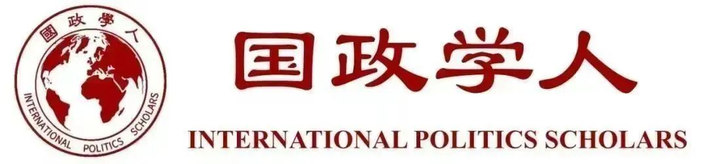

收录于合集

作品简介
【作者】
埃里克·史蒂文·爱德曼（Eric Steven Edelman）是美国外交官，曾任国防政策副部长（2005-2009），美国驻土耳其大使（2003-2005），美国驻芬兰共和国大使（1998-2001），国家安全事务副总统首席副助理（2001-2003），美国国防政策部副部长（2005-2009）。现任战略和预算评估中心顾问，捍卫民主基金会高级顾问。
雷·塔伊（Ray Takeyh）是伊朗裔美国中东学者，曾任美国国务院官员，并且是外交关系委员会高级研究员，以及即将出版的《最后的国王：伊朗，美国和巴列维王朝的陷落》（The Last Shah: Iran, America, and the Fall of the Pahlavi Dynasty）一书的作者。
【编译】 邵良（国政学人编译员，中国人民大学）
【校对】 冯毓婧
【审核】 姚寰宇
【排版】 贺奕
【来源】 Eric S. Edelman and Ray Takeyh. (2020). The Next Iranian Revolution ：Why Washington Should Seek Regime Change in Tehran, Foreign Affairs, 99 (3), 131-136,138-145.

期刊简介
《外交事务》（Foreign Affairs），创刊于1922年，是美国外交关系委员会发布的国际关系和美国外交政策的美国杂志，被誉为“美国最具影响力的外交政策杂志”之一。根据2018年的期刊引文报告, 该期刊的影响因子为4.390，在“国际关系”类别的91种期刊中排名第3。 __
下一次伊朗革命：为什么华盛顿应该在德黑兰寻求政权更迭 ****
The Next Iranian Revolution ：
Why Washington Should Seek Regime Change in Tehran ****
内容提要
“政权更迭”在华盛顿是一个敏感词。它让人想起了伊拉克战争的画面，那场战争使美国陷入了自己制造的泥潭。这就是为什么那些支持美国对伊朗采取强制手段的人通常被指控秘密支持政权更迭。对此，当事人几乎总是予以否认。他们坚持认为，他们不希望政权更迭：他们只希望伊朗伊斯兰共和国的神权主义者改变他们的行为。但是，这种转变永远不会发生，因为 伊朗政权永远不会迁就美国，停止其革命运动 。因此， 政权更迭不是一个激进或鲁莽的想法，而是美国对伊朗政策最务实和最有效的目标 ——事实上，这是有意义地减少伊朗威胁的必由之路。
坚决支持政权更迭并不意味着鼓吹对伊朗发动军事入侵，而是意味着推动美国采取一切手段破坏伊朗的神职政权（clerical state），包括暗中协助持不同政见者。 美国不能推翻伊朗伊斯兰共和国，但它可以创造条件，使这种灭亡成为可能。 这个政权比许多西方分析人士认为的要脆弱；一场里应外合的运动可能可以推翻它。近年来，公众反对该政权的呼声高涨，影响广泛。伊朗人渴望接受更好的领导。华盛顿的问题不应该是是否接受政权更迭，而应该是如何帮助伊朗人民实现政权更迭。
文章导读
01
WE ARE NEVER EVER GETTING TOGETHER
不可调和的矛盾
在过去的40年里，几乎每一位美国总统都试图与伊朗达成某种和解。尽管表面上剑拔弩张，特朗普政府做法的内在逻辑与前任如出一辙：让伊朗付出代价，以便推进未来的谈判。
这些总统都未能理解， 伊朗政权的核心仍然是一个革命组织 。在诞生40年后，伊朗伊斯兰共和国的精英们仍然坚持革命的戒律，即使被证明是弄巧成拙的。这是因为革命领袖霍梅尼（Ayatollah Ruhollah Khomeini）并不依赖世俗原则；他把宗教作为自己的统治信条。霍梅尼的意识形态建立在什叶派伊斯兰教的政治化和激进主义版本上，这种版本经常与长期以来的信仰传统相矛盾。但 对于伊朗最忠诚的核心支持者来说，伊朗神权政体始终是实现真主在大地上意志的一个重要实验 。在霍梅尼的继任者、最高领袖哈梅内伊（Ali Khamenei）的领导下，这些真正的信徒保留了对伊朗政府内部最强大分支的控制权，并成功地抵制了各届总统和议会的改革努力。
对霍梅尼和他的信徒来说，他们革命的持续活力迫使他们无情地输出革命。这将是一场无国界的革命；它的吸引力不会受到文化差异或穆斯林世界内部民族情感分歧的限制。哈梅内伊忠实地履行了这一使命，支持整个中东地区的代理武装（proxy militias），目的是推进伊朗式的伊斯兰主义，破坏美国支持的地区安全秩序。在毛拉偏爱的叙述中，帝国主义的美国试图利用该地区的资源来强化西方的工业。实现这一目标需要华盛顿通过支持腐败的阿拉伯君主制和一个非法的犹太复国主义实体来征服穆斯林世界。 伊朗政权视抵制美国的统治为神圣使命（divine imperative）。
这就是为什么伊朗伊斯兰共和国永远不会成为负责任的区域利益攸关方。它永远不会允许真正的政治竞争，也不会允许有组织的反对派形成。它永远不会为了商业而放弃其核野心。它永远不会承认美国在中东的任何利益是合法的。革命者永远不会放弃他们的革命。
02
CARPE DIEM
把握今朝
由于与神权主义者达成可持续和解的前景渺茫，美国唯一有意义的政策是寻求政权更迭，即尽一切可能削弱神权政府，并帮助伊朗国内反对政府的人。 其目的应该是帮助大批希望恢复1979年推翻沙阿运动的革命的最初承诺的伊朗人。这一运动在被霍梅尼及其伊斯兰派别劫持之前，得到了包括自由派和亲民主派在内的广泛团体的支持。美国应该谦虚地对待自己的能力，并明白它不能总是左右事态的发展。但鉴于神权政体在国内的脆弱性，华盛顿仍然可以在削弱政权力量方面发挥相当大的作用。美国不能选择政权如何倒台的精确机制，也不能选择继任政权的确切轮廓。但它可以对两者产生很大的影响。
今天，伊朗政权陷入僵局。该政权面临着不满的民众，他们正在失去恐惧感，并越来越愿意在街头对抗政府的安全部门。没有人知道后神权主义的未来会是什么样子，但越来越多的伊朗人似乎愿意找出答案。
在过去的两年里，伊朗受到了自1979年革命以来最严重的示威活动的冲击，严重程度甚至超过了绿色革命。与之前的群众抗议相比， 今天的抗议对神权政体构成了更大的威胁，因为它们代表着工人阶级和穷人的反抗， 这些人在近年来占了示威者的大多数。在早些时候的抗议活动中，政府对大学生和中产阶级抗议者的参与不屑一顾。但神职人员认为穷人是政权的中坚力量，他们通过虔诚信仰和庇护关系与神权政治紧密相连。
然而，伊朗的经济崩溃削弱了这种联系。“有钱的神职人员，把钱还给我们！”是去年抗议活动中流行的口号。但是，工人阶级和贫穷的示威者已经不止于表达经济上的不满，他们欣然接受政治口号，这震惊了政府。例如，2017年12月，基本商品价格飙升后，抗议活动席卷伊朗。各大城市的游行者公开高呼“哈梅内伊去死吧！”“神职人员滚蛋！”在政府出动安全部队后，示威浪潮逐渐退去。但去年11月，油价突然上涨，在数百个城市引发骚乱；约1500人死于警察和安全部队之手。这一次，示威者不仅要求他们的领导人去死，还谴责了其使伊朗卷入国际冲突的决策。（“不为加沙，不为黎巴嫩，我们的生命属于伊朗！”“离开叙利亚，想想我们！”）
今年1月，在美国无人机空袭击毙苏莱曼尼后，大批哀悼者涌上伊朗各城市的街头，因此许多人以为这次空袭团结了伊朗民众，使之支持他们的政权。然而，就在几周后，声援的幻觉被大规模民众抗议活动打破。这是因为，在封锁了几天消息之后，伊朗政府承认，因美国入侵而处于高度戒备状态的伊朗防空部队意外击落了一架从德黑兰机场起飞的乌克兰民航客机，造成176人死亡。
新冠病毒的爆发使伊朗政府的合法性再次受到打击。随着新冠病毒的传播，伊朗政权不仅未能保护其人民的健康和安全，而且其封锁消息的行径，使得伊朗人民连自我防护都难以开展。这将进一步削弱该政权的信誉，并加剧伊朗人民多年来积攒的熊熊怒火。
03
HOW CAN I HELP YOU?
美国能提供什么帮助？
尽管伊朗充满了不同政见者，但尚未出现连贯的抵抗运动。华盛顿无法制造一个这样的运动。但 通过公开削弱伊朗政权和暗中协助伊朗国内反对派，美国可以帮助目前阵营散乱的反对派稳住阵脚。
华盛顿应该寻求进一步榨干伊朗的经济，策反伊朗政权骨干成员叛逃，并悄悄地让那些敢于挑战伊朗政权的人得偿所愿。但它不能走得更远： 它不能亲自推动政权更迭。 也就是说，神权政体的推翻和更替必须靠伊朗人民自己的奋斗。
实现政权更迭的目标不会付出太大代价，但这将需要一个升级版的秘密行动计划，以帮助伊朗民间社会中那些正在质疑政权合法性的人。 其中最主要的是一些已经举行过罢工，以图抗议政府的政策和行动的专业团体，如劳工团体、教师工会和学生团体。
伊朗工会应该是美国努力的一个特别重点。1979年伊朗革命期间，石油和运输工人的罢工对伊朗当时政权的瘫痪至关重要。近年来，钢铁工人、卡车司机、公共汽车司机、铁路工人、教师和甘蔗工人也纷纷举行罢工，挑战现政权。通过秘密向可能发动类似社会运动的组织提供资金，美国可以进一步削弱伊朗的经济。
除了采取这种秘密行动外，华盛顿还应调整其对伊朗的公共外交政策。 美国官员应该利用一切机会强调伊朗政权侵犯人权的行为，并警告说，伊朗政权垮台后，国际社会将追究这些侵犯人权者的责任，特别要追究那些参与使用武力镇压民众抗议的人的责任。同时，华盛顿应该强调，伊朗政权中任何想叛逃的成员都将得到美国的庇护。中情局应该建立一个机制，联系和捞走所有希望离开的人。即使为数不多的叛逃者也能扩大伊朗当局对其手下的不信任，迫使其安全部门不断在自身队伍中寻找不可靠的分子，并定期进行清洗。这将削弱其政权整体的工作效率，并在国家镇压机器内部制造不信任和猜忌。
除了这些政策和官方言论之外，美国还必须采取更多行动，向伊朗人民提供准确的信息和诚实的分析，以拆穿伊朗政权编造的谎言。
04
UNDER PRESSURE
极限施压
然而，在伊朗境内帮助持不同政见者只是战斗的一半。 为了削弱伊朗政权对该国的控制，为其他势力掌权创造机会，美国还必须扩大特朗普政府制裁伊朗经济且已见成效的“极限施压”运动。
美国还必须提高伊朗在周边地区进行军事冒险的代价。 击毙苏莱曼尼是直接增加伊朗对外军事冒险成本的重要一步。伊朗的干预已经使其在其代理人造成严重破坏的地方丧失民心。华盛顿应该利用这一点，帮助反伊朗武装，包括在合适时候通过秘密手段提供财政支持，并利用海空资源阻止伊朗军事物资流向伊朗政权的代理人。
加强对伊朗施压，也需要和美国在该地区的军事战略和态势的协同合作。 这将挫败其在该地区的军事主导权，抵消伊朗一些军事投资的价值，并给伊朗带来额外的成本，从而进一步削弱伊朗政权。
05
WHAT THE CRITICS MISS
评论家们错哪了
有许多反对政权更迭的观点。观点之一是美国对伊朗内部反对派的援助会抹黑他们在其他伊朗人眼中的名声。但毫无疑问，伊朗持不同政见者自己是这一风险的最佳判断者；华盛顿应该找出最值得美国援助的人们，让他们自己决定是否接受援助。值得注意的是， 在伊朗过去十年的所有抗议活动中，美国从未受到谴责。 事实上，2009年，许多绿色革命示威者呼吁奥巴马公开支持他们的事业，尽管是徒劳的。就连特朗普也没有成为去年任何街头抗议的靶子。
其他对政权更迭持怀疑态度的人可能会针对1981年《阿尔及尔协议》（Algiers Accords），该协议结束了1979年伊朗人质危机，迫使华盛顿避免干涉德黑兰的内政。 美国应该公开表明，它不再认为自己受这项协议的约束，这项协议是城下之盟 ，伊朗绑架和杀害美国官员、赞助对美国军队的代理攻击（proxy attacks）以及支持恐怖组织，一再严重违反了这项协议。
一些批评人士可能会争辩说，公开寻求政权更迭将使通过谈判限制伊朗核计划的任何希望破灭。但是，这一观点仍然假定有可能与现政权达成一项可靠的军备控制协定；然而并没有这种可能。 伊朗与美国和其他大国达成的核协议存在致命的缺陷： 它没有禁止伊朗国内铀浓缩进程或禁止伊朗发展先进的离心机，并且协议中所有最重要的条文都有日落条款（sunset clauses）。而自从特朗普政府退出协议以来，伊朗领导人已经明确表示，他们不会就新协议进行谈判，也不会延长现有协议的到期限制。事实是，美国和伊朗的军控外交时代已经基本结束。尽管如此，为了保持国际压力和国会对激进政策的支持，即使美国将政权更迭作为一个目标，它也应该对谈判保持开放态度。
另一个普遍反对美国对伊朗实行政权更迭的观点是，任何其他遵循神权政体的政府都会更糟。这一观点的一些拥护者坚持认为，政权更迭只会导致另一个令人厌恶的领导人从革命卫队中崛起。在这种情况下，伊朗将从一个好战的神权国家变成一个法西斯军事独裁国家。这一论点错误地假定，革命卫队与它所服务的神职领导人不是一条心。 实际上，神职领导人和革命卫队的领导人是不可分割的。 他们信仰同一种意识形态，面临同一困境的不同方面：毛拉们痛苦地解释为什么年轻人不重视他们的革命教导；伊斯兰革命卫队的将军们面临着一项艰巨的任务：把从下层阶级征召来的部队新兵送到他们的故乡，殴打和枪杀他们进行抗议的同龄人。
最后，对政权更迭政策的批评人士有时会警告说，如果伊朗伊斯兰共和国倒台，伊朗将重蹈2003年的伊拉克或2011年的利比亚的覆辙，成为一个失败国家（failed state）。但伊朗和这些国家之间存在着显著差异。伊朗的国家和政体已经存在了数千年：与伊拉克和利比亚不同，伊朗不是欧洲殖民者地图开疆的产物。更重要的是，尽管伊朗确实存在种族紧张局势，德黑兰政权确实镇压宗教少数民族，但伊朗社会绝大多数人是什叶派，没有困扰伊拉克的种族和宗派分裂或使利比亚难以治理的部落派系纷争。最后，即使在神权统治下，伊朗的民间社会也在蓬勃发展，并没有像被非民主政权长期统治的伊拉克和利比亚那样四分五裂。
与许多阿拉伯国家相比，伊朗有着丰富的政治历史、知情的公民社会、活跃的新闻界、富有创造力的知识界以及庞大而有文化的中产阶级。 事实上，自二十世纪初以来，伊朗的历史发展主旋律就是人们从君主那里寻求自由，并与企图维护特权的毛拉们长期斗争的决心。
在过去的几年里，伊朗人又一次出动了。学生、工人、神职人员和商人正在积极反对专制统治，就像他们在上个世纪的大部分时间里所做的一样。今天在街上抗议的人是明天将领导伊朗的人，他们的斗争值得华盛顿的拥抱。
06
A CHANGE IS GONNA COME
暴风雨的前夜
伊朗的政权更迭不会很完美。它不会立即解决华盛顿和德黑兰之间的所有问题，更不会马上稳定中东局势。但美国至少应该尝试给伊朗人民一个机会，让他们获得配得上他们的政府。 否则，华盛顿注定要重蹈过去的覆辙：假装有可能与毛拉谈判，盲目地期望神权革命运动会以某种方式产生“温和派”，以避免玩火自焚，或者天真地希望在没有得到任何外界支持的情况下，民众起义可以取得成功。之前的那些套路已经失败40多年了。是时候尝试一些不同的东西了。
译者评述
本篇文章展示了历史视角在国际政治研究中的几个应用方法：
1. 根据政治文化的历史延续性，对一个国家总体的政治走向进行宏观分析。这里，作者以伊朗人民自二十世纪以来不断争取自由的历史进程推测伊朗政局的未来走向，即体现了这一方法。毕竟，一个国家的政治文化往往是长期稳定不易改变的。所谓“自由主义民主的要素几乎是基督教文明的现代翻版或者政治表达”，“伊斯兰文明对于大中东国家政治的直接影响也无处不在”（杨光斌 2020，18）。
2. 根据一个组织内部文化价值观的历史延续性，对这个组织未来的决策方向进行中观分析。作者详细爬梳了伊朗神权政体团队的起源和发展过程，从中发现了“伊朗政权的核心仍然是一个革命组织”，并且与美国的矛盾不可调和，即体现了这一方法。
3. 通过放大历史细节，近距离观察组织内部人际关系以及领导人个人的价值取向，对组织内部结构进行微观分析。作者仔细观察了伊朗神权执政团队中神职领导人和革命卫队的领导人的人际关系以及各自的价值取向，得出了“神职领导人和革命卫队的领导人是不可分割的”这一结论，即体现了这一方法。
然而，就解决现实政治问题来说，上述这些方法是远远不够的，毕竟事在人为。对此，作者有着清醒的认识，并提出了“美国不能推翻伊朗伊斯兰共和国，但它可以创造条件，使这种灭亡成为可能”这一观点。
参考文献：
[1]杨光斌.政治学新走向：历史政治学[J].社会科学文摘,2020(01):17-20.
本文由国政学人独家编译推荐，文章观点不代表本平台观点，转载请联系授权。
添加 “国小政”微信，获取最新资讯
**
**


好好学习，天天“在看”
国政学人
支持学术公益与知识传播
微信扫一扫赞赏作者 __赞赏
已喜欢，对作者说句悄悄话
取消 __
发送给作者
发送
最多40字，当前共字
上一页 1/3 下一页
长按二维码向我转账
支持学术公益与知识传播
受苹果公司新规定影响，微信 iOS 版的赞赏功能被关闭，可通过二维码转账支持公众号。